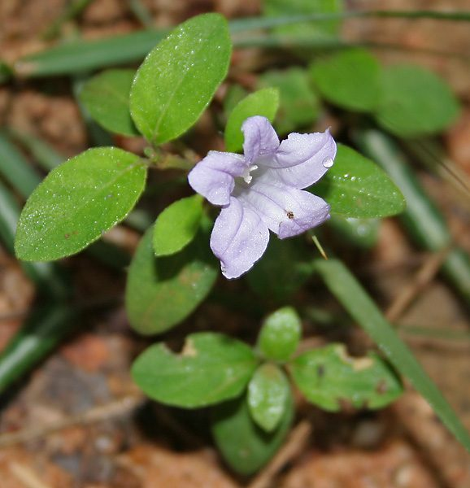

प्रोस्ट्रेट वाइल्ड पेटुनियाProstrate Wild Petunia
Ruellia prostrata · Acanthaceae · FLR-0409

- Scientific name वैज्ञानिक नाम
- Ruellia prostrata Poir.
- Family कुल
- Acanthaceae
- Hindi हिंदी
- प्रोस्ट्रेट वाइल्ड पेटुनिया
- Local names स्थानीय नाम
- prostrate wild petunia, wild petunia
- Status here यहाँ की स्थिति
- native
- Movement आवागमन
- Resident, here all year
- Known from कहाँ दर्ज
- Others have published records from the wider Awadh–Purvanchal plain, none yet from Basti–Ayodhya अवध–पूर्वांचल से दूसरों के प्रकाशित अभिलेख, बस्ती–अयोध्या से अभी नहीं
- IUCN IUCN
- not evaluated
- Review समीक्षा
- not yet reviewed
When to look कब देखें
Expected mainly in July, August, September, October, November, December. मुख्यतः जुलाई, अगस्त, सितंबर, अक्टूबर, नवंबर, दिसंबर में अपेक्षित।
Uses and possibilities उपयोग और संभावनाएँ
“Traditional medicine” means a documented traditional use, not a claim that it works. Nothing on this page is medical advice.
Drawn from the documented uses in the profile below, where each is labelled traditional, current or a research lead. All uses →
Tell it apart from इनसे अलग पहचानें
प्रोस्ट्रेट वाइल्ड पेटुनिया / Prostrate Wild Petunia
Ruellia prostrata Poir. — Acanthaceae
प्रोस्ट्रेट वाइल्ड पेटुनिया — यह बगीचों, झाड़ियों और छायादार मेड़ों पर जमीन पर पसरकर उगने वाला एक बारहमासी पौधा है। इसके तनों की गांठों पर सूजन होती है और वहाँ से जड़ें निकलती हैं। इसके फूल हल्के नीले-बैंगनी या जामुनी रंग के तुरही जैसे होते हैं, जो सुबह खिलते हैं और दोपहर तक झड़ जाते हैं। इसकी फलियां सूखने पर पानी की बूंद पड़ते ही चटक जाती हैं।
Quick Identification त्वरित पहचान
| Feature | Description |
|---|---|
| Plant habit | Diffuse, prostrate or decumbent perennial undershrub |
| Stems | Much-branched, swollen and tinged with purple at nodes, rooting below |
| Leaves | Opposite, ovate or elliptic, acute at both ends, entire, sparsely hairy |
| Flowers | Subsessile, solitary or few together in leaf axils; caducous |
| Corolla | Tubular-funnelform, pale greyish-purple or pale blue-violet |
| Fruit | Clavate (club-shaped) pubescent capsule bursting elastically when moistened |
Field tip: Look in shady garden borders for prostrate stems with swollen purple nodes and delicate pale violet trumpet flowers that drop by midday.
हिंदी: गांठों पर फूले हुए तने, आमने-सामने अंडाकार पत्तियाँ और सुबह खिलकर दोपहर में गिरने वाले तुरही जैसे हल्के बैंगनी फूल इसकी पहचान हैं।
Morphology आकारिकी
Measurement not available in consulted sources.
A small, diffuse, prostrate or climbing perennial undershrub. Root system fibrous and woody, spreading through the topsoil. Stems prostrate, sprawling among low bushes or trailing over the ground, much-branched, nodes distinctly swollen, hairy and frequently tinged with deep purple; internodes elongated.
Leaves opposite, simple, petiolate; petiole slender, puberulous; blade ovate or elliptic, acute at both ends, entire, membranous, dull green, glabrous or sparsely covered with appressed hairs on both surfaces, lineolate with microscopic cystoliths.
Flowers subsessile, borne solitary or two to three together in the leaf axils; bracteoles foliaceous, resembling small leaves. Calyx five-lobed, divided to below the middle; segments linear-subulate, acute, hairy, persistent. Corolla tubular-funnelform, pale greyish-purple, pale lilac or violet, caducous (falling within a few hours of opening), finely pubescent outside; corolla tube narrowly cylindric below, abruptly widened into a campanulate throat; limb with five subequal, rounded, spreading lobes. Stamens four, didynamous, enclosed within the corolla tube.
Fruit a clavate (club-shaped), pointed, pubescent bivalved capsule, solid at the base, carrying seeds in the upper half. Seeds numerous (typically 16 to 20), discoid, suborbicular, flattened, dark brown, completely fringed along the margin with a dense hygroscopic band of hairs that uncoil rapidly when moistened.
हिंदी: तना जमीन पर रेंगता है और गांठों पर बैंगनी रंग की सूजन होती है। पत्तियाँ आमने-सामने होती हैं। फूल तुरही जैसे हल्के बैंगनी रंग के होते हैं। फलियां गदा जैसी होती हैं जिनके भीतर चपटे बीज होते हैं।
Behaviour & Ecology व्यवहार और पारिस्थितिकी
A widespread native Indian herb of shady and semi-shaded habitats. It is commonly found rambling through orchard understoreys, under hedges, along drainage banks, and across moist grassy village waste ground.
The flowers open early in the morning shortly after dawn and wither or drop by midday, relying on early morning insect visitors for pollination. The species displays remarkable hygroscopic seed dispersal: when the mature dry capsule is wetted by rain or morning dew, moisture triggers the elastic splitting of the capsule valves, violently launching the flat seeds into the surroundings. Upon landing on damp earth, the marginal hairs instantly erect, anchoring the seed securely in the soil.
हिंदी: इसके फूल सुबह जल्दी खिलते हैं और दोपहर तक गिर जाते हैं। पकी हुई फलियों पर पानी की बूंद पड़ते ही वे झटके से फटती हैं और बीज दूर बिखर जाते हैं।
Life Cycle / Phenology जीवन चक्र
Shoots sprout vigorously with the onset of the monsoon rains in July. Vegetative trailing branches spread through August and September, forming loose green mats beneath shrubs.
Flowering begins in July and continues steadily through October, November, and early December. Clavate capsules ripen within a few weeks of flowering. During the cooler, drier months of January and February, growth slows, and plants in dry exposed places may die back to the rootstock. With the arrival of hot summer winds, above-ground growth desiccates, but the woody perennial roots survive to re-sprout with the next rains.
हिंदी: जुलाई में बारिश शुरू होते ही नए कल्ले फूटते हैं। जुलाई से दिसंबर तक फूल और फलियां आती हैं। भीषण गर्मी में ऊपर का हिस्सा सूख जाता है पर जड़ें बची रहती हैं।
Associated Species / Interactions सहजीवी प्रजातियाँ
The pale lilac flowers are eagerly visited in the early morning by honeybees, small leafcutter bees, and skipper butterflies seeking nectar.
Frequently grows in association with acanthaceous associates such as comb rungia and minnie root.
हिंदी: इसके पत्ते तितलियों के लिए उपयोगी हैं और सुबह-सुबह मधुमक्खियाँ इसके फूलों पर आती हैं।
Pests and Diseases कीट और रोग
Foliage is regularly chewed by butterfly caterpillars without causing permanent harm to established rootstocks. Powdery mildew and leaf spots occasionally appear on shaded leaves during cool humid winter months.
हिंदी: तितलियों के लार्वा इसकी पत्तियाँ खाते हैं। छायादार जगहों में कभी-कभी पत्तियों पर फफूंद के धब्बे पड़ जाते हैं।
Agricultural / Human Relevance कृषि प्रासंगिकता
In the agricultural landscape of eastern Uttar Pradesh, prostrate wild petunia is a harmless native understorey plant that does not invade plowed annual crop fields. It provides ground cover along orchard edges and field borders.
Chopra et al. (1956, p. 99, as Dipteracanthus prostratus) record that the leaves are used as a remedy for ear diseases. This is a record of published traditional use, not medical advice.
हिंदी: यह फसलों को नुकसान नहीं पहुँचाता। पारंपरिक चिकित्सा में इसके पत्तों का उपयोग कान के रोगों में किया जाता रहा है।
Expected Locally स्थानीय रूप से अपेक्षित
Not a field record. Written from published accounts for eastern Uttar Pradesh. No confirmed local sighting yet — if you have seen it, that is what the atlas needs.
अभी तक स्थानीय पुष्टि नहीं। यह विवरण प्रकाशित स्रोतों से है, किसी अवलोकन से नहीं।
Expected in shady mango and guava orchards, bushy field borders, ditch banks, and moist uncultivated verges across Basti, Ayodhya, and neighbouring districts from July through December. GBIF holds published records from the wider Awadh–Purvanchal plain, none yet from Basti–Ayodhya. The first verifiable record from the region will be a dated photograph of flowering plants or a population in a weed habitat or field border with district and coordinates.
हिंदी: बस्ती और अयोध्या में आम और अमरूद के बागों, झाड़ियों की छाँव और नम मेड़ों पर बरसात और शुरुआती सर्दियों में इसे देखा जा सकता है।
Distribution वितरण
Global range: Native across South Asia and tropical Africa; widespread throughout India, Sri Lanka, and tropical East Africa.
In India: Native and common throughout peninsular India, the Gangetic plains, and the foothills of the Himalayas.
In Uttar Pradesh: Abundant in groves, bushy tracts, and moist riverine belts across central and eastern Uttar Pradesh.
In Basti district / eastern UP: Expected throughout the district in shaded orchard margins and rural scrubland.
हिंदी: यह भारत और उष्णकटिबंधीय अफ्रीका का मूल निवासी है और उत्तर प्रदेश के बागों व झाड़ीदार इलाकों में सामान्य रूप से पाया जाता है।
Research Questions शोध प्रश्न
- What proportion of lemon pansy butterfly eggs laid in village groves are deposited on this species compared to other acanthaceous hosts?
- How does the explosive dehiscence mechanism respond to varying droplet sizes of dew or light rain?
- What is the foraging efficiency of solitary bees on the short-lived morning flowers before they drop? / दोपहर से पहले फूल गिरने से पहले मधुमक्खियाँ इनसे कितना रस जुटा पाती हैं?
- How quickly do the hygroscopic seed hairs erect upon contacting moist soil, and how firmly do they anchor the seed? / गीली मिट्टी पर गिरते ही बीज के बाल कितनी तेजी से खड़े होकर उसे जमीन में जमा देते हैं?
- Can a child place a mature dry brown pod in a drop of water on a leaf and watch it suddenly burst open?
हिंदी: क्या पानी की बूंद पड़ते ही इसकी फली सचमुच चटकती है और क्या लेमन पैंसी तितली इसी पर अंडे देती है?
Similar Species मिलती-जुलती प्रजातियाँ
| Species | How to tell apart | हिंदी | |
|---|---|---|---|
| `[[comb_rungia\ | Rungia pectinata]]` | Stems erect or diffuse; flowers tiny, in dense one-sided comb-like spikes with scarious bracts | फूल बहुत छोटे, एकतरफा कंघी जैसी बाली में खिलते हैं |
| `[[minnie_root\ | Ruellia tuberosa]]` | Erect herb with swollen spindle-shaped tuberous roots and large dark blue-purple flowers | पौधा सीधा, जड़ें मोटी कंद जैसी और फूल गहरे नीले-बैंगनी होते हैं |
Field rule: Look for prostrate trailing stems with swollen purple nodes, solitary pale lilac morning flowers, and club-shaped capsules bursting in water.
हिंदी: रेंगते हुए तनों पर फूली हुई बैंगनी गांठें, तुरही जैसे हल्के बैंगनी फूल और पानी में फटने वाली गदा जैसी फलियां इसकी पहचान हैं।
Taxonomy & Classification वर्गीकरण
Original description. Described by Jean Louis Marie Poiret in 1804 in Lamarck's Encyclopédie Méthodique, Botanique, volume 6, page 349.
Subspecies. Often treated in older Indian works as Ruellia prostrata var. dejecta (Nees) C.B.Clarke (Duthie 1911; Hooker 1884), or under the synonym Dipteracanthus prostratus (Poir.) Nees. Monotypic in modern treatments.
Family and order placement. Placed in family Acanthaceae (subfamily Acanthoideae, tribe Ruellieae), order Lamiales.
Phylogenetic notes. Placed within Ruellia, characterized by clavate capsules, jaculators, and discoid hygroscopic seeds.
IUCN status rationale. Not evaluated by the IUCN Red List. It is a widespread, abundant, and adaptable native species with no known threats.
हिंदी: यह अकेंथेसी कुल का पौधा है। पोइरे ने 1804 में इसका मूल वर्णन किया था।
Photo Gallery फोटो गैलरी
No photos yet — add field photos to media/species/prostrate_wild_petunia/ and run node scripts/sync_photos.js.
Photos needed आवश्यक फोटो
- [ ] Trailing habit with swollen nodes in orchard understorey (बगीचे में रेंगता तना और गांठें)
- [ ] Freshly opened pale lilac flower in morning light (सुबह खिला हल्का बैंगनी फूल)
- [ ] Mature clavate capsule and hygroscopic discoid seeds (गदा जैसी फली और बीज)
References संदर्भ
- Poiret, J. L. M. (1804). Encyclopédie Méthodique, Botanique, vol. 6, p. 349.
- Duthie, J. F. (1911). Flora of the Upper Gangetic Plain and of the Adjacent Siwalik and Sub-Himalayan Tracts, vol. 2, p. 187. (as Ruellia prostrata)
- Hooker, J. D. (1884). The Flora of British India, vol. 4, p. 411. (as Ruellia prostrata)
- Chopra, R. N., Nayar, S. L. & Chopra, I. C. (1956). Glossary of Indian Medicinal Plants, Council of Scientific and Industrial Research, New Delhi, p. 99. (as Dipteracanthus prostratus)
- GBIF Occurrence Data — Ruellia prostrata, India (2025).
Source file: species/flora/weeds/prostrate_wild_petunia.md